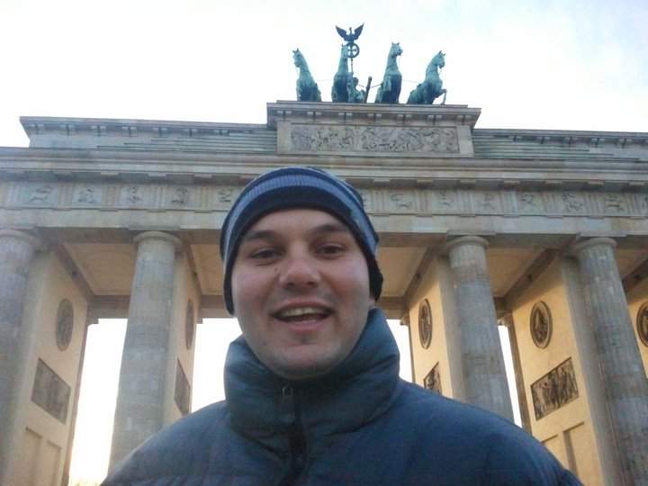

Personal experince
My personal portrait
- Education
Master of Science in Geophysics from ETH Zurich - Career
Stratigic consulting at Oliver Wyman - Languages
- Arabic: Native speaker
- English: Advance level C2
- German: Advance level C1